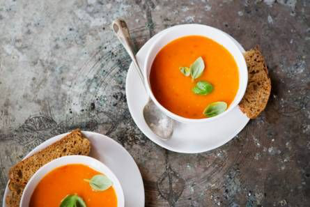

Tomatensoep
Deze soep zet je al binnen een half uurtje op tafel. En lekker dat-ie is!
Ingrediënten
- ½ sjalot
- ½ teen knoflook
- ½ eetlepel olijfolie
- 190 gram tomaten
- ½ theelepel paprikapoeder
- ½ bosje peterselie
- 3¾ gram basilicum
- 190 ml groentebouillon
Bereidingswijze
- Snipper de sjalotten in superkleine stukjes en de knoflook fijn. Verhit de olie in een soeppan en bak de sjalot en knoflook op laag vuur tot ze er doorzichtig uitzien.
- Snijd de tomaten in kwarten. Doe in de pan en bak 5 min. mee. Voeg de paprikapoeder toe. Haal de blaadjes van het basilicum en doe de steeltjes bij de tomaten in de pan.
- Voeg de bouillon toe en laat 10 min. zachtjes koken. Pureer de soep met de staafmixer. Voeg wat peper en eventueel zout toe als je dat lekker vindt.
- Doe de basilicumblaadjes op het laatste moment in de soep en roer door. Verdeel de tomatensoep in grote kommen en versier met nog een paar basilicumblaadjes.

Tip: Met tabasco maak je de soep nog wat pittiger.